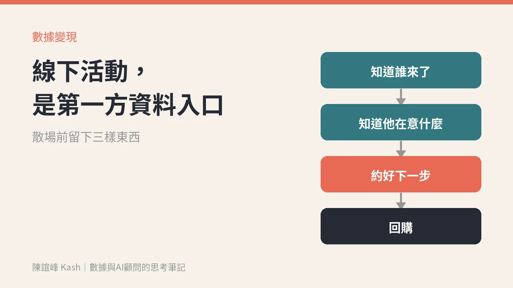

實體又回來了：線下活動不是反數據，是最好的第一方資料入口
很多老闆以為做數據就是做線上。其實客人親自走進來的那一刻，是你最有機會知道他是誰、在意什麼、下一步要做什麼的時候。可惜大部分活動散場後，只留下照片。

Gary Vaynerchuk 這週寄出的信，標題是〈Analog Is Back and I'm Betting On It〉。
他說，他現在最大的信念之一，是「analog」在商業上是很大的機會：回到老派、非數位、非 AI 的做法，但用數位和 AI 來放大。他的原話是：重點是用科技去做實體的事。
（先揭露一下：信裡他談的工具 CRWD，是他自己有投資的公司。這篇不談那個工具，只談他的觀點。）
信裡有一句我很同意：重點不只是拿到注意力，而是讓人親身體驗你做的東西，然後從接下來發生的事情裡學到東西。
最後那半句，就是這篇想談的。
線下活動，常常是最貴的「一次性」
門市活動、講座、快閃店、試吃、品牌體驗日、商會聚會。這些場合的共同點是：花錢、花人、花時間，現場很熱鬧。
然後散場。
活動檢討會上，大家看的是來了多少人、拍了多少照片、發了幾篇貼文。至於來的人是誰、問了什麼、對哪個產品停留最久、誰說「下個月再來看看」，通常沒有人記得，或只記在某位同事的腦袋裡。
這不是活動辦得不好，而是活動被當成「曝光」在做，而不是當成「入口」在做。
為什麼線下反而是最好的資料入口
線上的資料很多，但多半是行為的痕跡：點了什麼、看了多久、從哪裡來。你要從痕跡去猜他在想什麼。
線下不一樣。客人站在你面前，會親口說：
- 「我家小孩過敏，這個成分可以嗎？」
- 「我們公司明年要換系統，你們有沒有在做這個？」
- 「今天先看看，等年終獎金下來再說。」
這些話，是處境、是時間點、是購買條件。線上很難拿到，線下一句話就給你了。
而且這是客人當面、自願告訴你的資料，也就是第一方資料。不是跟平台買的，不是從別人那邊推估的。
數據不是報表，是下一筆生意。線下活動，就是這筆生意最容易被聽見的地方。
活動散場前，要留下三樣東西
我會用三個問題檢查一場活動有沒有變成入口。
一、我們知道誰來了嗎？
不是人數，是身分。最簡單的做法，是讓報到、抽獎、領試用品這些本來就要做的動作，順便完成「加 LINE 好友」或「綁定會員」。
關鍵是給一個合理的交換：加入就能收到今天講座的簡報、試用後的使用提醒、下次活動的優先通知。客人覺得值得，才會留下來。
也要清楚告訴對方，資料會拿來做什麼，並取得他的同意。這不只是法規要求，也是信任的開始。偷偷蒐集來的名單，之後很難好好用。
二、我們知道他在意什麼嗎？
現場同事聽到的話，要有地方放。不需要複雜系統，一張簡單的表就好：這位客人問了什麼、對哪個產品有興趣、提到什麼時間點。
重點是當天記、當天回傳，不要等到活動結束一週後再憑印象補。
三、我們約好下一步了嗎？
活動最有價值的成果，不是現場成交，是「約好下一步」。下週寄試用心得表、下個月的進階講座、年底前回訪。
下一步寫進會員資料或 LINE 的標籤裡，才有機會在對的時間，傳對的訊息給對的人。
從活動到回購，中間要接一條線
把三樣東西串起來，就是一條很樸素的路：
- 現場：報到時完成身分與同意（LINE 好友或會員綁定）。
- 記錄：同事把聽到的需求和時間點，記在對應的會員資料上。
- 分群：活動後依「在意什麼」分群，而不是一封訊息發給全部的人。
- 跟進：照當天約好的下一步，在對的時間發對的內容。
- 回看：下一季回頭看，這場活動來的人，後來有幾位回購、回購了什麼。
第五步最常被省略，但它決定了下一場活動值不值得辦、要怎麼辦。
Gary 在信裡也說了，這不是要取代社群、SEO 或 email，而是多一把工具。我會補一句：線下活動和數據不是兩條路，是同一條路的起點和後段。
週一可以先做的一件事
拿出你下一場要辦的活動企劃，看看裡面有沒有寫這三件事：怎麼知道誰來了、現場聽到的話放在哪裡、散場後的下一步是什麼。
如果企劃裡只有場地、流程、物料和來客數目標，那這場活動很可能又會只留下照片。
實體回來了。問題是，你準備好把走進來的人留下來了嗎？